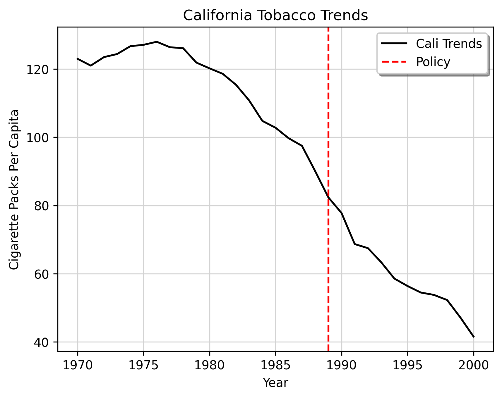

Every single day, governments pass laws to affect some real-life (we hope) outcome. Given their scale, policy typically touches hundereds if not millions of people. If California bans tobacco smoking in public, or if a New York City implements gun control, presumably we would agree these likely have impacts on outcomes such as tobacco consumption or homicide rates.
A Real Example
import pandas as pdimport numpy as npimport matplotlib.pyplot as pltimport matplotlib# Matplotlib themeJared_theme = {"axes.grid": True,"grid.linestyle": "-","legend.framealpha": 1,"legend.facecolor": "white","legend.shadow": True,"axes.facecolor": "white","figure.dpi": 150,"grid.color": "#D3D3D3","figure.figsize": (6.4, 4.8)}matplotlib.rcParams.update(Jared_theme)link =r"https://raw.githubusercontent.com/synth-inference/synthdid/master/data/california_prop99.csv"df = pd.read_csv(link, sep=';')# Assuming 'Year' is the name of the column you want to sort byCali = df[df['State'] =='California'] .reset_index() # Filter rows where the first column is 'California'Cali = Cali.sort_values(by='Year')# Create a NumPy array for PacksPerCapitapacks_per_capita = Cali['PacksPerCapita'].to_numpy()treatyear = Cali[Cali['treated'] ==1].index.min()+1970# Create a range of values from 1970 to 2000 for the x-axisyears_range = np.arange(1970, 2001)# Plotting PacksPerCapita versus Yearplt.plot(years_range, packs_per_capita, linestyle='-', color='black', label='Cali Trends')# Adding a vertical line at treatyearplt.axvline(x=treatyear, color='red', linestyle='--', label='Policy')# Adding labels and titleplt.xlabel('Year')plt.ylabel('Cigarette Packs Per Capita')plt.title('California Tobacco Trends')plt.legend()# Display the plotplt.show()

A line plot
Before we continue, understand fundamentally these outcomes being affected are the point. We, as a society, do policy precisely because we think it affects (or should affect) people somehow.
If California’s anti-tobacco policy didn’t affect smoking rates at all (or worse, if more people began to smoke) or if gun control has 0 impact on homicide rates, then surely they could not be justified in the very first place. In other words, underneath all the theory, if political science studies “who gets what where”, policy studies “what works?” But what do we even mean by work anyways? And more pressingly, how can we know the degree to which these policies impacted the outcomes I mentioned above?
This is the job for policy analysts to answer. This course reviews policy analysis from an outcomes based approach, with extended emphasis on practice; no matter how beautiful a theory is, if it does not withstand rigorous empirical scrutiny, the theory is wrong. We begin with justifications for why policy happens, and then go over the essentials of impact analysis. ## Personal Reflection Social science has become much more quantitative in the last 20 years. Every day. aspiring young policy analysts and econometricians use statistical models to answer these kinds of questions. I use Stata and Python in my daily work to conduct empirical analysis.
Indeed, many of the ideas we use in this course can be represented mathematically, using the language of optimization and matrix algebra. However, this is decidedly not the approach I take. Why not? Firstly because we don’t need to do it like this. There is plenty of room for this exposition in formalized statistics/econometrics courses.
The central ideas may be expressed using simple addition, subtraction, multiplication, and division. This class is meant to equip you with strong reasoning skills in your future workplace outside of academia. While it is meant to also prepare you for post-graduate study (so some math will be used), the key aspect of this class is meant to be application based.
Class Structure
I believe the best way to demonstrate knowledge of policy analysis is through writing. This course consists of two assignments, a paper draft and a final paper, which applies the reasoning skills that we discuss here. I don’t care about which policy it is. Whatever is interesting to you. To quote Noam Chomsky, the important part isn’t what we cover; it is about what you discover.
With this said, there are stipulations. Firstly, the policy must be specific. Frequently in courses like this, students come up with questions such as “how did Trump’s election affect education” or “how does welfare affect the economy”